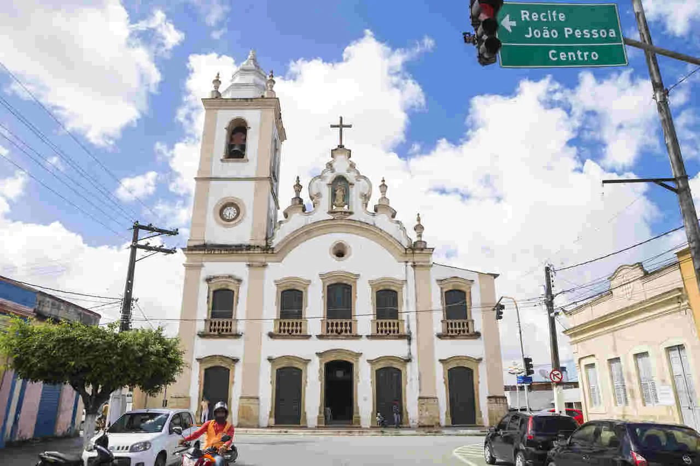
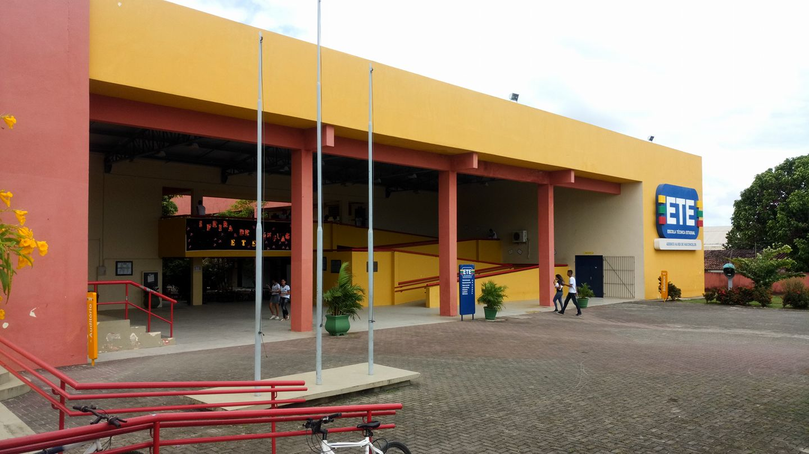

Goiana: Um Mosaico de História, Cultura e Desenvolvimento
Goiana, um município pernambucano de rica história e vibrante presente, se destaca por sua localização estratégica, economia diversificada e patrimônio cultural. Situada no extremo norte da Região Metropolitana do Recife, a cidade faz divisa com a Paraíba, o que a torna um importante centro de comércio e serviços.
Um Olhar Sobre a Cidade
Com uma economia impulsionada pelas indústrias automobilística e farmacêutica, Goiana também possui um setor agrícola expressivo, com destaque para a cultura da cana-de-açúcar. Essa diversidade econômica contribui para o seu desenvolvimento e a geração de empregos.
Além do aspecto econômico, Goiana se destaca por sua beleza natural, com praias, rios e áreas verdes que atraem turistas e moradores em busca de tranquilidade e lazer. A cidade possui um centro histórico preservado, com casarões coloniais e igrejas que contam a história da região.
Igrejas: Patrimônio Histórico e Fé

As igrejas de Goiana são verdadeiras obras de arte, com rica arquitetura e detalhes históricos. Algumas delas, como a Igreja Matriz de Nossa Senhora da Conceição, são consideradas patrimônio histórico e cultural. Esses templos religiosos não apenas servem como locais de culto, mas também como pontos turísticos e centros de atividades culturais.
Educação: Investindo no Futuro
Goiana possui uma rede de ensino diversificada, com escolas públicas e privadas que oferecem educação de qualidade em todos os níveis. A Escola Técnica Estadual (ETE) de Goiana se destaca por oferecer cursos técnicos em diversas áreas, preparando os jovens para o mercado de trabalho e contribuindo para o desenvolvimento da região.
ETE: Um Referencial em Educação Profissional

A ETE de Goiana desempenha um papel fundamental na formação de profissionais qualificados para atender às demandas do setor industrial e de serviços da região. A escola oferece cursos técnicos em áreas como eletrotécnica, mecânica, informática e administração, além de promover ações de extensão e pesquisa.